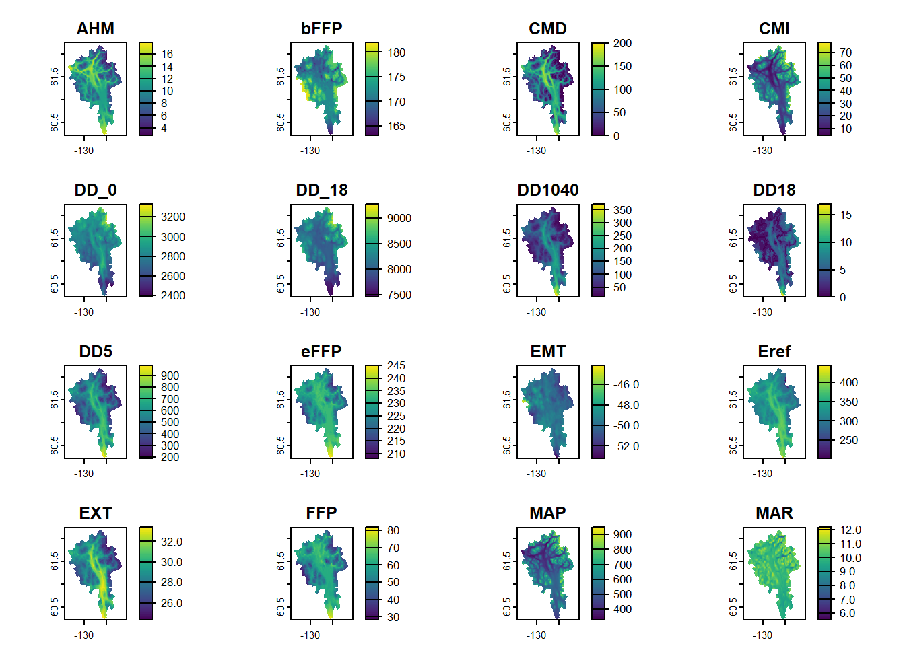
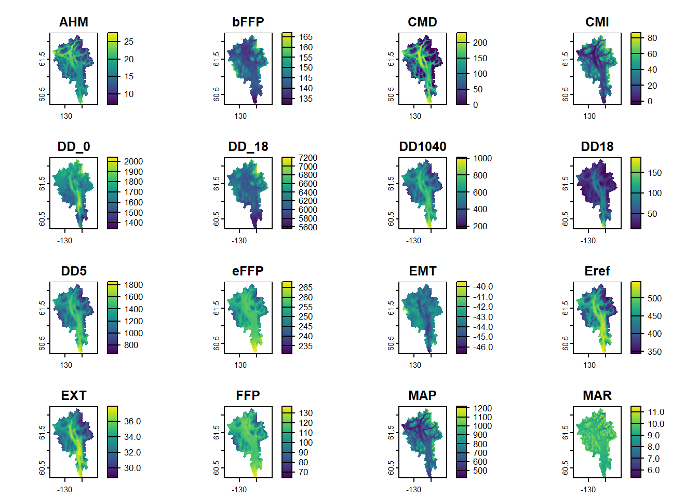

library(sf)
library(tmap)
library(dplyr)
library(terra)
library(elevatr)
library(ClimateNAr)
library(paletteer)ClimateBC and ClimateNA
Climate normals and projections
Introduction
The ClimateNAr library enables the downloading of up to 800m resolution climate normals and projections for BC and western NA. In this tutorial, we will illustrate the use of the ClimateNAr package along with the terra package for reading and writing rasters. Prior to using it, the ClimateNAr package needs to be downloaded and installed manually following these instructions:
- Go to and register
- Download the ClimateBC/NA R package and documentation
- Start R, go to the Packages menu, and select “Install package(s) from local file”
- Once installed, restart R and load the package: library(ClimateNAr)
CMI and other climate datasets can also be downloaded at these websites:
- https://climatebc.ca/
- https://climatena.ca/
Load required libraries
Make sure the following libraries are installed and loaded.
Create output directories
We will create two new directories, a temporary folder in which to store downloaded files from ClimateNA and an output folder in which to save the results of our processing.
tmpDir <- 'tmp/'
outDir <- 'data/'
if (!dir.exists(tmpDir)) dir.create(tmpDir)
if (!dir.exists(outDir)) dir.create(outDir)We start by reading our boundary layer, FDA 10AB, and converting it to lat/long (EPSG:4326), which is the standard CRS for the ClimateNA data.
bnd <- st_read('data/fda10ab.gpkg', quiet=T) |>
st_transform(4326)Download data
We will use the climateNAr function to download all annual normal and projected data for the same AOI as before. This time, however, we will use a DEM raster as an input parameter. (Note: It is not clear from the documentation what the purpose of this raster is i.e., is it used as a template to limit the size of the download or is the DEM used in an analytical step? PV to check code or contact author…) The steps include:
- Create an 800m DEM raster and save it as a tif file using a lat/long CRS (“EPSG:4326”).
- Use the climateNAr function to download the files.
The following code provides an example of creating a DEM for the AOI in lat/long. It uses the elevatr package to download the DEM. This package will be described in a separate tutorial.
if(!file.exists('data/dem800.tif')) {
rbndLL <- rast('data/fda10ab_800m.tif') |>
project('epsg:4326')
rbnd <- rast('data/fda10ab_800m.tif')
dem <- get_elev_raster(rbnd, z=6, clip='bbox')
dem800LL <- resample(rast(dem), rbnd) |>
project('epsg:4326') |>
mask(bnd)
writeRaster(dem800LL, 'data/dem800.tif', overwrite=TRUE)
}We now need to set four parameters to use the climateNAr function:
- The name and path of the input DEM
- A list of climate variables to download
- A list of normal and project scenarios to download
- The location of a temporary download directory
inputFile = 'data/dem800.tif'
varList = 'Y' # 'Y' for all annual variables or e.g., c('MAT','MAP','CMI') for a subset of variables
periodList = c('Normal_1961_1990.nrm','8GCMs_ensemble_ssp585_2071-2100.gcm')We can now download the selected bioclimate data.
norm <- climateNAr(inputFile, periodList='Normal_1961_1990.nrm', varList, tmpDir)
writeRaster(norm, paste0(outDir, 'norm_1961-1990.tif'), overwrite=TRUE)
proj <- climateNAr(inputFile, periodList='8GCMs_ensemble_ssp585_2071-2100.gcm', varList, tmpDir)
writeRaster(proj, paste0(outDir, 'proj_2071-2100.tif'), overwrite=TRUE)Plot normal and projected data
Now we can view a summary of the data as well as a plot of each layer. We start with the 1961-1990 normal period.
print(norm)class : SpatRaster
dimensions : 210, 288, 25 (nrow, ncol, nlyr)
resolution : 0.009658499, 0.009658499 (x, y)
extent : -130.8801, -128.0985, 60.21556, 62.24385 (xmin, xmax, ymin, ymax)
coord. ref. :
source(s) : memory
names : AHM, bFFP, CMD, CMI, DD_0, DD_18, ...
min values : 2.7, 163, 0, 4.53, 2383, 7456, ...
max values : 17.9, 182, 201, 77.85, 3333, 9280, ... plot(norm)
And finally the projected dataset.
print(proj)class : SpatRaster
dimensions : 210, 288, 25 (nrow, ncol, nlyr)
resolution : 0.009658499, 0.009658499 (x, y)
extent : -130.8801, -128.0985, 60.21556, 62.24385 (xmin, xmax, ymin, ymax)
coord. ref. :
source(s) : memory
names : AHM, bFFP, CMD, CMI, DD_0, DD_18, ...
min values : 6.9, 132, 0, -4.38, 1338, 5551, ...
max values : 27.6, 167, 232, 86.62, 2040, 7209, ... plot(proj)